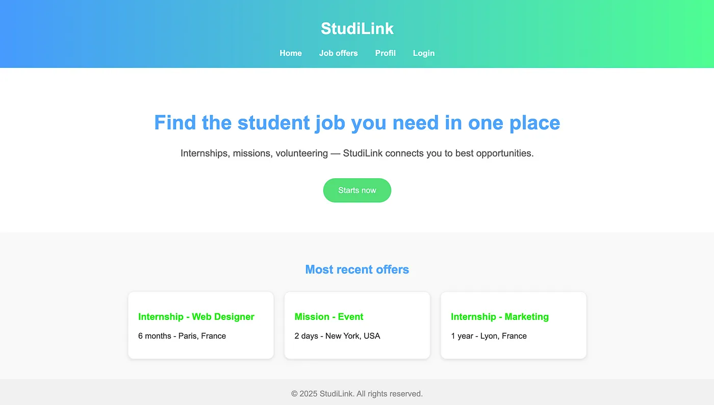
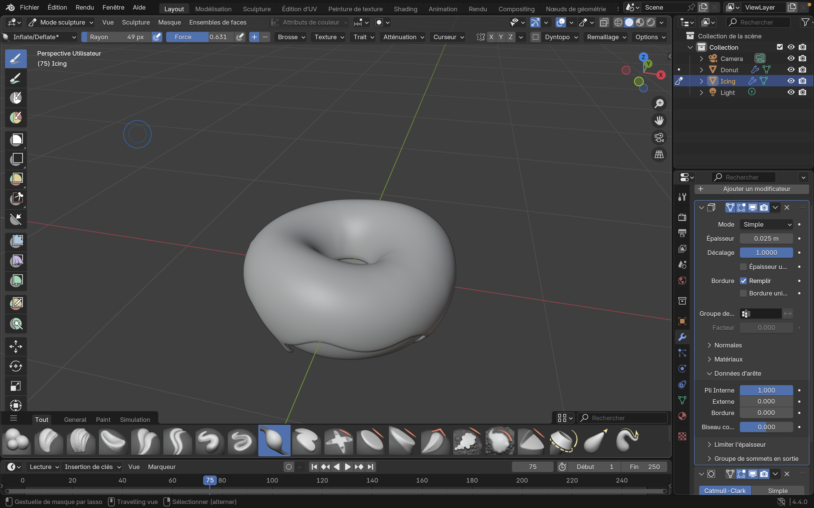

Premier gros projet réalisé ayant pour objective de recréer le site Airbnb.
HTML, Python, CSS, JS, Git.
Voir sur GitHub
Projet de fin d'année: créer un site internet répondant à un
problématique. J'ai décidé de créer un site permettant au étudiant
de faciliter la recherche de jobs, alternances, stages, et
autres...
PROJET EN COURS...
React JS, CSS, Node.JS, Express.
Documentation du projet 
Intérressé par le graphisme et la réalisation 3D, j'ai commencé
apprendre en autodidacte à utilisé le logiciel Blender.
APPRENTISSAGE EN COURS...
Blender.
